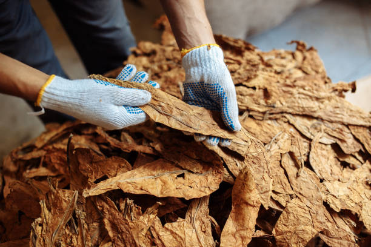
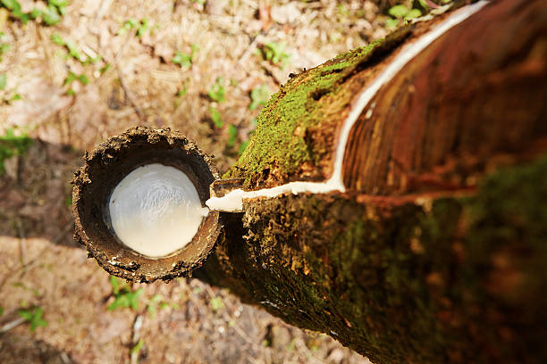
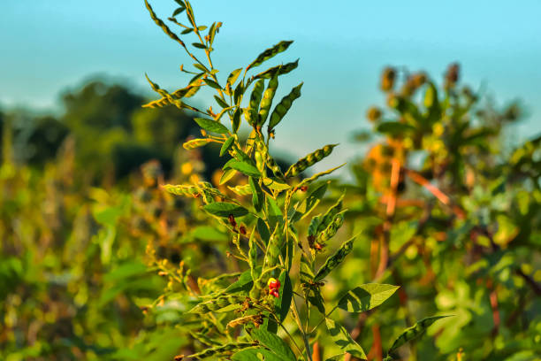
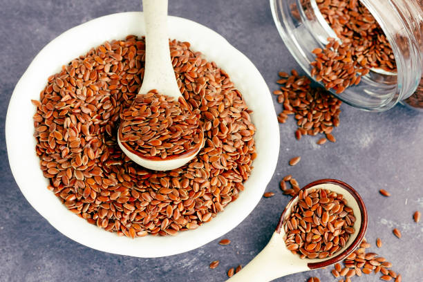
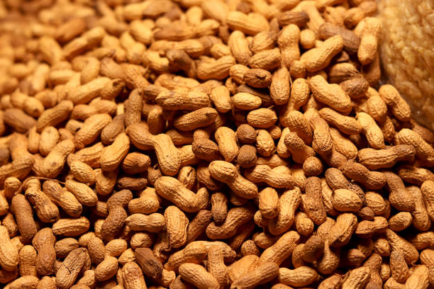
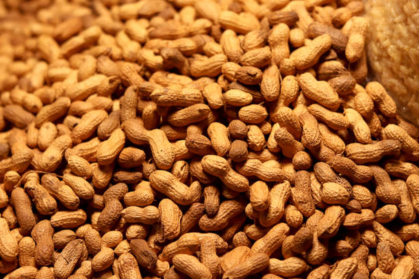
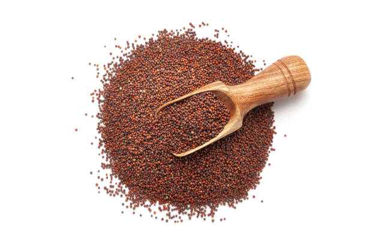
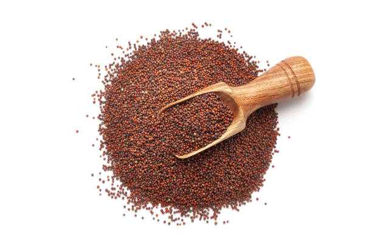
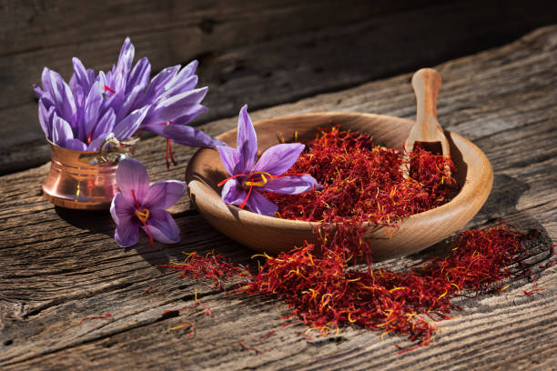
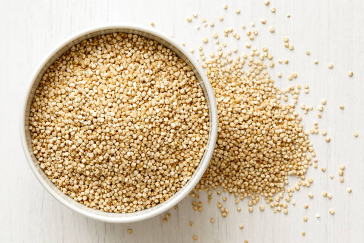

1.COTTON / 1.పత్తి


Cotton is primarily grown in India during the kharif season (June to November). The largest producers are Gujarat, Maharashtra, and Andhra Pradesh, with Gujarat holding the highest market share. Cotton thrives in well-drained black or alluvial soils, with an optimal soil temperature of 25-35°C. The crop typically matures in 150-180 days and requires substantial water and nutrients. The demand for cotton is highest in states like Maharashtra, Tamil Nadu, and Gujarat, driven by the textile industry. It is essential for producing fabrics, clothing, and other textile products, contributing significantly to the Indian economy.
ఖరీఫ్ సీజన్లో (జూన్ నుండి నవంబర్ వరకు) భారతదేశంలో పత్తిని ప్రధానంగా పండిస్తారు. అతిపెద్ద ఉత్పత్తిదారులు గుజరాత్, మహారాష్ట్ర మరియు ఆంధ్రప్రదేశ్, గుజరాత్ అత్యధిక మార్కెట్ వాటాను కలిగి ఉంది. పత్తి బాగా ఎండిపోయిన నలుపు లేదా ఒండ్రు నేలల్లో 25-35°C యొక్క సరైన నేల ఉష్ణోగ్రతతో వృద్ధి చెందుతుంది. పంట సాధారణంగా 150-180 రోజులలో పరిపక్వం చెందుతుంది మరియు గణనీయమైన నీరు మరియు పోషకాలు అవసరం. వస్త్ర పరిశ్రమ ద్వారా నడిచే మహారాష్ట్ర, తమిళనాడు మరియు గుజరాత్ వంటి రాష్ట్రాల్లో పత్తికి డిమాండ్ ఎక్కువగా ఉంది. వస్త్రాలు, దుస్తులు మరియు ఇతర వస్త్ర ఉత్పత్తులను ఉత్పత్తి చేయడానికి ఇది చాలా అవసరం, ఇది భారత ఆర్థిక వ్యవస్థకు గణనీయంగా దోహదపడుతుంది.
2.SUGARCANE / 2.చెరకు


Sugarcane is primarily grown in India during the kharif season (September to March) and can also be planted year-round. Uttar Pradesh is the largest producer, holding the highest market share, followed by Maharashtra and Karnataka. It thrives in well-drained loamy or clay soils with high organic content and requires a soil temperature of 20-30°C. The crop matures in about 10-18 months and demands substantial water and nutrients. The highest demand for sugarcane is in Uttar Pradesh, Maharashtra, and Tamil Nadu, where it supports major sugar and ethanol industries, contributing significantly to the economy.
చెరకు ప్రధానంగా ఖరీఫ్ సీజన్లో (సెప్టెంబర్ నుండి మార్చి) భారతదేశంలో పండిస్తారు మరియు ఏడాది పొడవునా కూడా నాటవచ్చు. ఉత్తరప్రదేశ్ అతిపెద్ద ఉత్పత్తిదారు, అత్యధిక మార్కెట్ వాటాను కలిగి ఉంది, తరువాత మహారాష్ట్ర మరియు కర్ణాటక ఉన్నాయి. ఇది అధిక సేంద్రీయ కంటెంట్తో బాగా ఎండిపోయిన లోమీ లేదా బంకమట్టి నేలల్లో వృద్ధి చెందుతుంది మరియు 20-30 ° C నేల ఉష్ణోగ్రత అవసరం. పంట సుమారు 10-18 నెలల్లో పరిపక్వం చెందుతుంది మరియు గణనీయమైన నీరు మరియు పోషకాలను కోరుతుంది. ఉత్తరప్రదేశ్, మహారాష్ట్ర మరియు తమిళనాడులో చెరకుకు అత్యధిక డిమాండ్ ఉంది, ఇక్కడ ఇది ప్రధాన చక్కెర మరియు ఇథనాల్ పరిశ్రమలకు మద్దతు ఇస్తుంది, ఆర్థిక వ్యవస్థకు గణనీయంగా దోహదపడుతుంది.
3.TEA / 3.టీ
Tea is grown in India year-round, with peak harvesting during the monsoon (May to September) and spring (March to April). Assam is the largest producer, holding the highest market share, followed by West Bengal and Tamil Nadu. Tea thrives in well-drained, acidic soils rich in organic matter and prefers a soil temperature of 20-30°C. The crop takes about 3-5 years to yield, requiring regular pruning and maintenance. The highest demand for tea is in Assam, West Bengal, and Kerala, where it is processed for both domestic consumption and export, significantly contributing to the economy.
భారతదేశంలో ఏడాది పొడవునా టీని పండిస్తారు, వర్షాకాలం (మే నుండి సెప్టెంబర్) మరియు వసంతకాలంలో (మార్చి నుండి ఏప్రిల్ వరకు) గరిష్టంగా పండిస్తారు. అస్సాం అతిపెద్ద ఉత్పత్తిదారు, అత్యధిక మార్కెట్ వాటాను కలిగి ఉంది, పశ్చిమ బెంగాల్ మరియు తమిళనాడు తర్వాతి స్థానాల్లో ఉన్నాయి. టీ బాగా ఎండిపోయిన, సేంద్రియ పదార్థాలు అధికంగా ఉండే ఆమ్ల నేలల్లో వృద్ధి చెందుతుంది మరియు 20-30°C నేల ఉష్ణోగ్రతను ఇష్టపడుతుంది. పంట దిగుబడికి దాదాపు 3-5 సంవత్సరాలు పడుతుంది, క్రమం తప్పకుండా కత్తిరింపు మరియు నిర్వహణ అవసరం. అస్సాం, పశ్చిమ బెంగాల్ మరియు కేరళలో టీకి అత్యధిక డిమాండ్ ఉంది, ఇక్కడ దేశీయ వినియోగం మరియు ఎగుమతి రెండింటికీ ప్రాసెస్ చేయబడుతుంది, ఇది ఆర్థిక వ్యవస్థకు గణనీయంగా దోహదం చేస్తుంది.
4.COFFEE / 4.కాఫీ

Coffee is primarily grown in India during the monsoon season, with planting occurring from April to June. Karnataka is the largest producer, accounting for approximately 70% of the country's coffee output, followed by Kerala and Tamil Nadu. Coffee thrives in well-drained, fertile soils rich in organic matter, ideally at altitudes of 900-1,200 meters, with a soil temperature of 20-25°C. The crop takes about 3-4 years to start yielding and requires regular rainfall. The highest demand for coffee is in Karnataka and Kerala, where it supports both local economies and export markets, contributing significantly to the agricultural sector.
భారతదేశంలో కాఫీని ప్రధానంగా వర్షాకాలంలో పండిస్తారు, ఏప్రిల్ నుండి జూన్ వరకు మొక్కలు నాటడం జరుగుతుంది. కర్నాటక అతిపెద్ద ఉత్పత్తిదారుగా ఉంది, దేశంలోని కాఫీ ఉత్పత్తిలో దాదాపు 70% వాటాను కలిగి ఉంది, తరువాత కేరళ మరియు తమిళనాడు ఉన్నాయి. 20-25°C నేల ఉష్ణోగ్రతతో 900-1,200 మీటర్ల ఎత్తులో, సేంద్రియ పదార్ధాలతో సమృద్ధిగా ఉన్న బాగా ఎండిపోయిన, సారవంతమైన నేలల్లో కాఫీ వృద్ధి చెందుతుంది. పంట దిగుబడి ప్రారంభించడానికి సుమారు 3-4 సంవత్సరాలు పడుతుంది మరియు సాధారణ వర్షపాతం అవసరం. కాఫీకి అత్యధిక డిమాండ్ కర్ణాటక మరియు కేరళలో ఉంది, ఇక్కడ ఇది స్థానిక ఆర్థిక వ్యవస్థలు మరియు ఎగుమతి మార్కెట్లకు మద్దతు ఇస్తుంది, వ్యవసాయ రంగానికి గణనీయంగా దోహదపడుతుంది.
5.TOBACCO / 5.పొగాకు

Tobacco is primarily grown in India during the rabi season (October to March). Andhra Pradesh is the largest producer, holding the highest market share, followed by Gujarat and Karnataka. It thrives in well-drained sandy loam soils with good moisture retention and requires a soil temperature of 20-30°C. The crop matures in about 90-120 days and needs moderate water and nutrient inputs. The highest demand for tobacco is in Andhra Pradesh, Karnataka, and Maharashtra, where it is processed for cigarettes, bidis, and chewing tobacco, significantly contributing to the agricultural economy and local industries.
పొగాకు ప్రధానంగా రబీ సీజన్లో (అక్టోబర్ నుండి మార్చి వరకు) భారతదేశంలో పండిస్తారు. ఆంధ్రప్రదేశ్ అతిపెద్ద ఉత్పత్తిదారు, అత్యధిక మార్కెట్ వాటాను కలిగి ఉంది, తరువాత గుజరాత్ మరియు కర్ణాటక ఉన్నాయి. ఇది మంచి తేమ నిలుపుదలతో బాగా ఎండిపోయిన ఇసుకతో కూడిన లోమ్ నేలల్లో వృద్ధి చెందుతుంది మరియు నేల ఉష్ణోగ్రత 20-30 ° C అవసరం. పంట దాదాపు 90-120 రోజులలో పరిపక్వం చెందుతుంది మరియు మితమైన నీరు మరియు పోషక ఇన్పుట్లు అవసరం. పొగాకుకు అత్యధిక డిమాండ్ ఆంధ్రప్రదేశ్, కర్ణాటక మరియు మహారాష్ట్రలలో ఉంది, ఇక్కడ సిగరెట్లు, బీడీలు మరియు నమలడం పొగాకు కోసం ప్రాసెస్ చేయబడుతుంది, ఇది వ్యవసాయ ఆర్థిక వ్యవస్థ మరియు స్థానిక పరిశ్రమలకు గణనీయంగా దోహదం చేస్తుంది.
6. JUTE / 6.జ్యూట్


Jute is primarily grown in India during the kharif season (June to September). West Bengal is the largest producer, holding the highest market share, followed by Assam and Bihar. Jute thrives in well-drained, fertile alluvial soils rich in organic matter. The optimal soil temperature for jute cultivation is 25-35°C. The crop takes about 4-6 months to mature and requires substantial water, especially during the growing season. The highest demand for jute is in West Bengal and Bangladesh, where it is processed into bags, textiles, and other products, contributing significantly to the agricultural economy and rural livelihoods.
జూట్ ప్రధానంగా ఖరీఫ్ సీజన్ (జూన్ నుండి సెప్టెంబర్ వరకు)లో భారతదేశంలో పండిస్తారు. పశ్చిమ బెంగాల్ అతిపెద్ద ఉత్పత్తిదారు, అత్యధిక మార్కెట్ వాటాను కలిగి ఉంది, తరువాత అస్సాం మరియు బీహార్ ఉన్నాయి. జనపనార బాగా ఎండిపోయిన, సేంద్రియ పదార్థాలు అధికంగా ఉండే సారవంతమైన ఒండ్రు నేలల్లో వృద్ధి చెందుతుంది. జనపనార సాగుకు సరైన నేల ఉష్ణోగ్రత 25-35 ° C. పంట పరిపక్వం చెందడానికి సుమారు 4-6 నెలలు పడుతుంది మరియు ముఖ్యంగా పెరుగుతున్న కాలంలో గణనీయమైన నీరు అవసరం. జనపనారకు అత్యధిక డిమాండ్ పశ్చిమ బెంగాల్ మరియు బంగ్లాదేశ్లో ఉంది, ఇక్కడ అది సంచులు, వస్త్రాలు మరియు ఇతర ఉత్పత్తులలో ప్రాసెస్ చేయబడుతుంది, ఇది వ్యవసాయ ఆర్థిక వ్యవస్థ మరియు గ్రామీణ జీవనోపాధికి గణనీయంగా దోహదపడుతుంది.
7.RUBBER / 7.రబ్బరు


Rubber is primarily grown in India throughout the year, with peak tapping occurring during the monsoon season (May to October). Kerala is the largest producer, contributing about 90% of the country's rubber output, followed by Tamil Nadu and Karnataka. Rubber thrives in well-drained, loamy soils rich in organic matter and requires a soil temperature of 25-35°C for optimal growth. The crop takes about 5-7 years to start yielding, with regular tapping needed once mature. The highest demand for rubber is in Kerala, where it is processed for various applications, including tires and footwear, significantly impacting the local economy.
భారతదేశంలో రబ్బరు ప్రధానంగా ఏడాది పొడవునా పెరుగుతుంది, వర్షాకాలంలో (మే నుండి అక్టోబర్ వరకు) గరిష్టంగా నొక్కడం జరుగుతుంది. కేరళ అతిపెద్ద ఉత్పత్తిదారుగా ఉంది, దేశంలోని రబ్బరు ఉత్పత్తిలో 90% వాటాను అందిస్తోంది, తర్వాతి స్థానాల్లో తమిళనాడు మరియు కర్ణాటక ఉన్నాయి. రబ్బరు బాగా ఎండిపోయిన, సేంద్రియ పదార్థంతో కూడిన లోమీ నేలల్లో వృద్ధి చెందుతుంది మరియు సరైన పెరుగుదలకు 25-35°C నేల ఉష్ణోగ్రత అవసరం. పంట దిగుబడిని ప్రారంభించడానికి సుమారు 5-7 సంవత్సరాలు పడుతుంది, పరిపక్వమైన తర్వాత క్రమం తప్పకుండా నొక్కడం అవసరం. రబ్బర్కు అత్యధిక డిమాండ్ కేరళలో ఉంది, ఇక్కడ టైర్లు మరియు పాదరక్షలతో సహా వివిధ అనువర్తనాల కోసం ఇది ప్రాసెస్ చేయబడుతుంది, ఇది స్థానిక ఆర్థిక వ్యవస్థను గణనీయంగా ప్రభావితం చేస్తుంది.
8.SOYABEAN / 8.సోయాబీన్

Soybean is primarily grown in India during the kharif season (June to September). Madhya Pradesh is the largest producer, accounting for about 50% of India’s soybean output, followed by Maharashtra and Rajasthan. Soybean thrives in well-drained, fertile loamy or sandy soils with good organic matter content. The optimal soil temperature for soybean cultivation is 20-30°C. The crop takes about 90-120 days to mature and requires moderate water and nutrient inputs. The highest demand for soybean is in Madhya Pradesh and Maharashtra, where it is processed for oil and animal feed, significantly contributing to the agricultural sector and economy.
సోయాబీన్ ప్రధానంగా ఖరీఫ్ సీజన్లో (జూన్ నుండి సెప్టెంబర్ వరకు) భారతదేశంలో పండిస్తారు. మధ్యప్రదేశ్ అతిపెద్ద ఉత్పత్తిదారుగా ఉంది, భారతదేశ సోయాబీన్ ఉత్పత్తిలో 50% వాటాను కలిగి ఉంది, తరువాత మహారాష్ట్ర మరియు రాజస్థాన్ ఉన్నాయి. సోయాబీన్ బాగా ఎండిపోయిన, సారవంతమైన లోమీ లేదా ఇసుక నేలల్లో మంచి సేంద్రియ పదార్థంతో వృద్ధి చెందుతుంది. సోయాబీన్ సాగుకు సరైన నేల ఉష్ణోగ్రత 20-30 ° C. పంట పరిపక్వం చెందడానికి 90-120 రోజులు పడుతుంది మరియు మితమైన నీరు మరియు పోషక ఇన్పుట్లు అవసరం. సోయాబీన్కు అత్యధిక డిమాండ్ మధ్యప్రదేశ్ మరియు మహారాష్ట్రలో ఉంది, ఇక్కడ చమురు మరియు పశుగ్రాసం కోసం ప్రాసెస్ చేయబడుతుంది, ఇది వ్యవసాయ రంగానికి మరియు ఆర్థిక వ్యవస్థకు గణనీయంగా దోహదపడుతుంది.
9.GROUNDNUT / 9.వేరుశనగ


Groundnut is primarily grown in India during the kharif season (June to September) and the rabi season (October to February). Gujarat is the largest producer, followed by Andhra Pradesh and Tamil Nadu. Groundnut thrives in well-drained sandy or loamy soils with good fertility. The optimal soil temperature for groundnut cultivation is 25-30°C. The crop typically takes about 120-150 days to mature and requires moderate water, especially during the flowering stage. The highest demand for groundnut is in Gujarat and Andhra Pradesh, where it is processed for oil and snacks, contributing significantly to the agricultural economy.
వేరుశెనగ ప్రధానంగా భారతదేశంలో ఖరీఫ్ సీజన్ (జూన్ నుండి సెప్టెంబర్) మరియు రబీ సీజన్ (అక్టోబర్ నుండి ఫిబ్రవరి) వరకు పెరుగుతుంది. గుజరాత్ అతిపెద్ద ఉత్పత్తిదారు, ఆ తర్వాత ఆంధ్రప్రదేశ్ మరియు తమిళనాడు ఉన్నాయి. వేరుశెనగ బాగా ఎండిపోయిన ఇసుక లేదా లోమీ నేలల్లో మంచి సంతానోత్పత్తితో వృద్ధి చెందుతుంది. వేరుశెనగ సాగుకు సరైన నేల ఉష్ణోగ్రత 25-30°C. పంట సాధారణంగా పరిపక్వం చెందడానికి 120-150 రోజులు పడుతుంది మరియు ముఖ్యంగా పుష్పించే దశలో మితమైన నీరు అవసరం. వేరుశెనగకు అత్యధిక డిమాండ్ గుజరాత్ మరియు ఆంధ్రప్రదేశ్లో ఉంది, ఇక్కడ చమురు మరియు స్నాక్స్ కోసం ప్రాసెస్ చేయబడి, వ్యవసాయ ఆర్థిక వ్యవస్థకు గణనీయంగా తోడ్పడుతుంది.
10.MUSTARD / 10.ఆవాలు

Mustard is primarily grown in India during the rabi season (October to March). Rajasthan is the largest producer, followed by Haryana and Punjab. Mustard thrives in well-drained loamy or clayey soils with good fertility. The optimal soil temperature for mustard cultivation is 15-25°C. The crop typically takes about 90-100 days to mature and requires moderate water, particularly during flowering and seed formation. The highest demand for mustard is in Rajasthan and Punjab, where it is processed for oil and is a key ingredient in various culinary dishes, contributing significantly to the agricultural economy.
ఆవాలు ప్రధానంగా భారతదేశంలో రబీ సీజన్లో (అక్టోబర్ నుండి మార్చి వరకు) పండిస్తారు. రాజస్థాన్ అతిపెద్ద ఉత్పత్తిదారు, హర్యానా మరియు పంజాబ్ తర్వాతి స్థానాల్లో ఉన్నాయి. ఆవాలు బాగా ఎండిపోయిన లోమీ లేదా బంకమట్టి నేలల్లో మంచి సంతానోత్పత్తితో వృద్ధి చెందుతాయి. ఆవాల సాగుకు సరైన నేల ఉష్ణోగ్రత 15-25 ° C. పంట సాధారణంగా పరిపక్వం చెందడానికి 90-100 రోజులు పడుతుంది మరియు ముఖ్యంగా పుష్పించే మరియు విత్తనాలు ఏర్పడే సమయంలో మితమైన నీరు అవసరం. ఆవపిండికి అత్యధిక డిమాండ్ రాజస్థాన్ మరియు పంజాబ్లో ఉంది, ఇక్కడ ఇది నూనె కోసం ప్రాసెస్ చేయబడుతుంది మరియు వివిధ పాక వంటకాలలో కీలకమైన అంశం, ఇది వ్యవసాయ ఆర్థిక వ్యవస్థకు గణనీయంగా దోహదపడుతుంది.
11.CHICKPEAS / 11.చిక్పీస్
Chickpeas are primarily grown in India during the rabi season (October to March). Rajasthan is the largest producer, followed by Maharashtra and Karnataka. Chickpeas thrive in well-drained sandy or loamy soils with good organic matter content. The optimal soil temperature for chickpea cultivation is 20-25°C. The crop typically takes about 90-120 days to mature and requires moderate water, particularly during the flowering and pod development stages. The highest demand for chickpeas is in Rajasthan and Madhya Pradesh, where they are used in various culinary dishes and processed into snacks, contributing significantly to the agricultural economy.
చిక్పీస్ను ప్రధానంగా రబీ సీజన్లో (అక్టోబర్ నుండి మార్చి వరకు) భారతదేశంలో పండిస్తారు. రాజస్థాన్ అతిపెద్ద ఉత్పత్తిదారు, మహారాష్ట్ర మరియు కర్ణాటక తర్వాతి స్థానాల్లో ఉన్నాయి. చిక్పీస్ మంచి సేంద్రీయ పదార్థంతో బాగా ఎండిపోయిన ఇసుక లేదా లోమీ నేలల్లో వృద్ధి చెందుతుంది. చిక్పా సాగుకు సరైన నేల ఉష్ణోగ్రత 20-25 ° C. పంట సాధారణంగా పరిపక్వం చెందడానికి 90-120 రోజులు పడుతుంది మరియు మితమైన నీరు అవసరం, ముఖ్యంగా పుష్పించే మరియు కాయ అభివృద్ధి దశలలో. చిక్పీస్కు అత్యధిక డిమాండ్ రాజస్థాన్ మరియు మధ్యప్రదేశ్లో ఉంది, ఇక్కడ వాటిని వివిధ పాక వంటకాలలో ఉపయోగిస్తారు మరియు చిరుతిళ్లుగా ప్రాసెస్ చేస్తారు, ఇది వ్యవసాయ ఆర్థిక వ్యవస్థకు గణనీయంగా దోహదపడుతుంది.
12.LENTILS / 12.కాయధాన్యాలు

Lentils are primarily grown in India during the rabi season (October to March). Madhya Pradesh is the largest producer, followed by Rajasthan and Maharashtra. Lentils thrive in well-drained sandy or loamy soils with good fertility and organic matter. The optimal soil temperature for lentil cultivation is 15-25°C. The crop typically takes about 90-120 days to mature and requires moderate water, especially during the flowering and pod filling stages. The highest demand for lentils is in Madhya Pradesh and Rajasthan, where they are used in various culinary dishes and processed into snacks, significantly contributing to the agricultural economy.
కాయధాన్యాలు ప్రధానంగా రబీ సీజన్లో (అక్టోబర్ నుండి మార్చి వరకు) భారతదేశంలో పండిస్తారు. మధ్యప్రదేశ్ అతిపెద్ద ఉత్పత్తిదారు, రాజస్థాన్ మరియు మహారాష్ట్ర తర్వాతి స్థానాల్లో ఉన్నాయి. మంచి ఎండిపోయిన ఇసుక లేదా లోమీ నేలల్లో మంచి సంతానోత్పత్తి మరియు సేంద్రీయ పదార్థంతో కాయధాన్యాలు వృద్ధి చెందుతాయి. కాయధాన్యాల సాగుకు సరైన నేల ఉష్ణోగ్రత 15-25 ° C. పంట సాధారణంగా పరిపక్వం చెందడానికి 90-120 రోజులు పడుతుంది మరియు ముఖ్యంగా పుష్పించే మరియు కాయలు నింపే దశలలో మితమైన నీరు అవసరం. కాయధాన్యాలకు అత్యధిక డిమాండ్ మధ్యప్రదేశ్ మరియు రాజస్థాన్లో ఉంది, ఇక్కడ వాటిని వివిధ పాక వంటకాలలో ఉపయోగిస్తారు మరియు స్నాక్స్గా ప్రాసెస్ చేస్తారు, ఇది వ్యవసాయ ఆర్థిక వ్యవస్థకు గణనీయంగా దోహదపడుతుంది.
13.PIGEON PEA / 13.పావురం బఠానీ

Pigeon pea is primarily grown in India during the kharif season (June to September). Maharashtra is the largest producer, followed by Karnataka and Uttar Pradesh. Pigeon pea thrives in well-drained, sandy or loamy soils with good fertility. The optimal soil temperature for pigeon pea cultivation is 20-30°C. The crop typically takes about 120-180 days to mature and requires moderate water, especially during flowering and pod development. The highest demand for pigeon pea is in Maharashtra and Karnataka, where it is used in various culinary dishes, contributing significantly to the agricultural economy and protein supply for the population.
పావురం బఠానీని ప్రధానంగా భారతదేశంలో ఖరీఫ్ సీజన్లో (జూన్ నుండి సెప్టెంబర్ వరకు) పండిస్తారు. మహారాష్ట్ర అతిపెద్ద ఉత్పత్తిదారు, కర్ణాటక మరియు ఉత్తరప్రదేశ్ తర్వాతి స్థానాల్లో ఉన్నాయి. పావురం బఠానీ బాగా ఎండిపోయిన, ఇసుక లేదా లోమీ నేలల్లో మంచి సంతానోత్పత్తితో వృద్ధి చెందుతుంది. పావురం బఠానీ సాగుకు సరైన నేల ఉష్ణోగ్రత 20-30 ° C. పంట సాధారణంగా పరిపక్వం చెందడానికి 120-180 రోజులు పడుతుంది మరియు ముఖ్యంగా పుష్పించే మరియు కాయ అభివృద్ధి సమయంలో మితమైన నీరు అవసరం. పావురం బఠానీకి అత్యధిక డిమాండ్ మహారాష్ట్ర మరియు కర్ణాటకలో ఉంది, ఇక్కడ దీనిని వివిధ పాక వంటకాలలో ఉపయోగిస్తారు, వ్యవసాయ ఆర్థిక వ్యవస్థకు మరియు జనాభాకు ప్రోటీన్ సరఫరాకు గణనీయంగా తోడ్పడుతుంది.
14.MAIZE(CORN) / 14.మొక్కజొన్న


Maize is primarily grown in India during the kharif season (June to October) and the rabi season (October to March). The largest producers are Karnataka, Andhra Pradesh, and Maharashtra. Maize thrives in well-drained, fertile loamy or sandy soils. The optimal soil temperature for maize cultivation is 20-30°C. The crop typically takes about 90-120 days to mature and requires moderate to high water, especially during the tasseling and silking stages. The highest demand for maize is in Karnataka and Maharashtra, where it is used for food, feed, and industrial purposes, significantly contributing to the agricultural economy.
భారతదేశంలో మొక్కజొన్న ప్రధానంగా ఖరీఫ్ సీజన్ (జూన్ నుండి అక్టోబర్) మరియు రబీ సీజన్ (అక్టోబర్ నుండి మార్చి)లో పండిస్తారు. అతిపెద్ద ఉత్పత్తిదారులు కర్ణాటక, ఆంధ్రప్రదేశ్ మరియు మహారాష్ట్ర. మొక్కజొన్న బాగా ఎండిపోయిన, సారవంతమైన లోమీ లేదా ఇసుక నేలల్లో వృద్ధి చెందుతుంది. మొక్కజొన్న సాగుకు సరైన నేల ఉష్ణోగ్రత 20-30°C. పంట సాధారణంగా పక్వానికి దాదాపు 90-120 రోజులు పడుతుంది మరియు ముఖ్యంగా పులిచింతల మరియు పట్టు దశలలో మితమైన మరియు అధిక నీరు అవసరం. మొక్కజొన్నకు అత్యధిక డిమాండ్ కర్ణాటక మరియు మహారాష్ట్రలో ఉంది, ఇక్కడ ఆహారం, దాణా మరియు పారిశ్రామిక అవసరాలకు ఉపయోగించబడుతుంది, ఇది వ్యవసాయ ఆర్థిక వ్యవస్థకు గణనీయంగా దోహదం చేస్తుంది.
15. SAFFLOWER / 15. కుసుమ పువ్వు

Safflower is primarily grown in India during the rabi season (October to March). The largest producers are Maharashtra, Karnataka, and Gujarat. Safflower thrives in well-drained, sandy or loamy soils with good fertility. The optimal soil temperature for safflower cultivation is 20-25°C. The crop typically takes about 120-150 days to mature and requires moderate water, especially during flowering and seed formation. The highest demand for safflower is in Maharashtra and Gujarat, where it is processed for oil and used in cooking and medicinal applications, contributing significantly to the agricultural economy.
కుసుమను ప్రధానంగా భారతదేశంలో రబీ సీజన్లో (అక్టోబర్ నుండి మార్చి వరకు) పండిస్తారు. అతిపెద్ద ఉత్పత్తిదారులు మహారాష్ట్ర, కర్ణాటక మరియు గుజరాత్. మంచి ఎండిపోయిన, ఇసుక లేదా లోమీ నేలల్లో మంచి సంతానోత్పత్తితో కుసుమ వృద్ధి చెందుతుంది. కుసుమ సాగుకు సరైన నేల ఉష్ణోగ్రత 20-25°C. పంట సాధారణంగా పరిపక్వం చెందడానికి 120-150 రోజులు పడుతుంది మరియు ముఖ్యంగా పుష్పించే మరియు గింజలు ఏర్పడే సమయంలో మితమైన నీరు అవసరం. కుసుమకు అత్యధిక డిమాండ్ మహారాష్ట్ర మరియు గుజరాత్లో ఉంది, ఇక్కడ నూనె కోసం ప్రాసెస్ చేయబడుతుంది మరియు వంట మరియు ఔషధ అనువర్తనాల్లో ఉపయోగించబడుతుంది, ఇది వ్యవసాయ ఆర్థిక వ్యవస్థకు గణనీయంగా దోహదపడుతుంది.
16.COCONUT / 16.కొబ్బరి
Coconut is primarily grown in India throughout the year, with peak harvests during the monsoon season (June to September). The largest producers are Kerala, Karnataka, and Tamil Nadu. Coconut thrives in well-drained sandy loam or clayey soils rich in organic matter. The optimal soil temperature for coconut cultivation is 25-30°C. The crop takes about 6-7 months to mature for tender coconuts and 12 months for mature coconuts. It requires high humidity and regular rainfall. The highest demand for coconut is in Kerala and Tamil Nadu, where it is used for oil, culinary purposes, and various traditional products, significantly contributing to the agricultural economy.
భారతదేశంలో కొబ్బరిని ప్రధానంగా ఏడాది పొడవునా పండిస్తారు, వర్షాకాలంలో (జూన్ నుండి సెప్టెంబరు వరకు) అత్యధిక పంటలు పండుతాయి. అతిపెద్ద ఉత్పత్తిదారులు కేరళ, కర్ణాటక మరియు తమిళనాడు. కొబ్బరి బాగా ఎండిపోయిన ఇసుక లోమ్ లేదా సేంద్రియ పదార్థాలు అధికంగా ఉండే బంకమట్టి నేలల్లో వృద్ధి చెందుతుంది. కొబ్బరి సాగుకు సరైన నేల ఉష్ణోగ్రత 25-30°C. లేత కొబ్బరి కాయలు పక్వానికి రావడానికి 6-7 నెలలు మరియు పండిన కొబ్బరికాయలకు 12 నెలల సమయం పడుతుంది. దీనికి అధిక తేమ మరియు సాధారణ వర్షపాతం అవసరం. కొబ్బరికి అత్యధిక డిమాండ్ కేరళ మరియు తమిళనాడులో ఉంది, ఇక్కడ ఇది చమురు, పాక అవసరాలు మరియు వివిధ సాంప్రదాయ ఉత్పత్తులకు ఉపయోగించబడుతుంది, ఇది వ్యవసాయ ఆర్థిక వ్యవస్థకు గణనీయంగా దోహదం చేస్తుంది.
17.CASHEW / 17.జీడిపప్పు

Cashew is primarily grown in India during the kharif season (April to September). The largest producers are Maharashtra, Kerala, and Karnataka. Cashew thrives in well-drained sandy or laterite soils with good drainage and low water retention. The optimal soil temperature for cashew cultivation is 20-30°C. The crop typically takes about 3-5 years to start producing and reaches full production in about 7-10 years. It requires moderate rainfall and dry periods for harvesting. The highest demand for cashew is in Maharashtra and Kerala, where it is processed for nuts and various culinary applications, significantly contributing to the agricultural economy.
జీడిపప్పును భారతదేశంలో ఖరీఫ్ సీజన్లో (ఏప్రిల్ నుండి సెప్టెంబర్ వరకు) ప్రధానంగా పండిస్తారు. అతిపెద్ద ఉత్పత్తిదారులు మహారాష్ట్ర, కేరళ మరియు కర్ణాటక. మంచి నీటి పారుదల మరియు తక్కువ నీటి నిలుపుదల ఉన్న బాగా ఎండిపోయిన ఇసుక లేదా లేటరైట్ నేలల్లో జీడిపప్పు వృద్ధి చెందుతుంది. జీడి సాగుకు సరైన నేల ఉష్ణోగ్రత 20-30 ° C. పంట సాధారణంగా ఉత్పత్తిని ప్రారంభించడానికి 3-5 సంవత్సరాలు పడుతుంది మరియు 7-10 సంవత్సరాలలో పూర్తి ఉత్పత్తికి చేరుకుంటుంది. కోతకు మితమైన వర్షపాతం మరియు పొడి కాలాలు అవసరం. జీడిపప్పుకు అత్యధిక డిమాండ్ మహారాష్ట్ర మరియు కేరళలో ఉంది, ఇక్కడ ఇది గింజలు మరియు వివిధ పాక అనువర్తనాల కోసం ప్రాసెస్ చేయబడుతుంది, ఇది వ్యవసాయ ఆర్థిక వ్యవస్థకు గణనీయంగా దోహదపడుతుంది.
18.CASTOR / 18.ఆముదం

Castor is primarily grown in India during the kharif season (June to September). The largest producers are Gujarat, Rajasthan, and Andhra Pradesh. Castor thrives in well-drained, sandy or loamy soils with good fertility. The optimal soil temperature for castor cultivation is 20-30°C. The crop typically takes about 90-150 days to mature and requires moderate water, especially during seed development. The highest demand for castor is in Gujarat and Rajasthan, where it is processed for castor oil, used in various industrial applications, cosmetics, and pharmaceuticals, significantly contributing to the agricultural economy.
ఆముదం ప్రధానంగా భారతదేశంలో ఖరీఫ్ సీజన్లో (జూన్ నుండి సెప్టెంబర్ వరకు) పండిస్తారు. అతిపెద్ద ఉత్పత్తిదారులు గుజరాత్, రాజస్థాన్ మరియు ఆంధ్రప్రదేశ్. ఆముదం బాగా ఎండిపోయిన, ఇసుక లేదా లోమీ నేలల్లో మంచి సంతానోత్పత్తితో వృద్ధి చెందుతుంది. ఆముదం సాగుకు సరైన నేల ఉష్ణోగ్రత 20-30 ° C. పంట సాధారణంగా పరిపక్వం చెందడానికి 90-150 రోజులు పడుతుంది మరియు ముఖ్యంగా విత్తనాల అభివృద్ధి సమయంలో మితమైన నీరు అవసరం. ఆముదం కోసం అత్యధిక డిమాండ్ గుజరాత్ మరియు రాజస్థాన్లలో ఉంది, ఇక్కడ ఆముదం కోసం ప్రాసెస్ చేయబడి, వివిధ పారిశ్రామిక అనువర్తనాలు, సౌందర్య సాధనాలు మరియు ఫార్మాస్యూటికల్స్లో ఉపయోగించబడుతుంది, ఇది వ్యవసాయ ఆర్థిక వ్యవస్థకు గణనీయంగా దోహదం చేస్తుంది.
19.SILK / 19.సిల్క్

Silk is primarily produced in India throughout the year, with significant activity during the warmer months (April to September) for sericulture. The largest producers are Karnataka, Tamil Nadu, and Andhra Pradesh. Silk thrives in mulberry cultivation, requiring well-drained, loamy or clayey soils rich in organic matter. The optimal soil temperature for silk production is 25-30°C. The entire process, from silkworm rearing to harvesting silk, can take about 45-60 days. It requires moderate water and care in maintaining humidity. The highest demand for silk is in Karnataka and Tamil Nadu, where it is used in textiles and garments, significantly contributing to the agricultural economy.
సిల్క్ ప్రధానంగా ఏడాది పొడవునా భారతదేశంలో ఉత్పత్తి చేయబడుతుంది, సెరికల్చర్ కోసం వెచ్చని నెలల్లో (ఏప్రిల్ నుండి సెప్టెంబర్ వరకు) గణనీయమైన కార్యాచరణ ఉంటుంది. అతిపెద్ద ఉత్పత్తిదారులు కర్ణాటక, తమిళనాడు మరియు ఆంధ్రప్రదేశ్. మల్బరీ సాగులో సిల్క్ వృద్ధి చెందుతుంది, సేంద్రీయ పదార్థాలు అధికంగా ఉండే మంచి ఎండిపోయిన, లోమీ లేదా బంకమట్టి నేలలు అవసరం. పట్టు ఉత్పత్తికి సరైన నేల ఉష్ణోగ్రత 25-30 ° C. పట్టు పురుగుల పెంపకం నుండి పట్టు కోత వరకు మొత్తం ప్రక్రియ 45-60 రోజులు పట్టవచ్చు. ఇది తేమను నిర్వహించడంలో మితమైన నీరు మరియు సంరక్షణ అవసరం. పట్టు కోసం అత్యధిక డిమాండ్ కర్ణాటక మరియు తమిళనాడులో ఉంది, ఇక్కడ దీనిని వస్త్రాలు మరియు వస్త్రాలలో ఉపయోగిస్తారు, ఇది వ్యవసాయ ఆర్థిక వ్యవస్థకు గణనీయంగా దోహదపడుతుంది.
20.ARECANUT(BETEL NUT) / 20.అరకనట్ (తాంబూల గింజ)


Arecanut is primarily grown in India during the kharif season (June to September), with harvesting occurring throughout the year. The largest producers are Karnataka, Kerala, and Assam. Arecanut thrives in well-drained, fertile loamy or sandy soils, preferring slightly acidic to neutral pH. The optimal soil temperature for arecanut cultivation is 25-35°C. The crop takes about 5-7 years to start producing and can yield for up to 30 years. It requires high humidity and regular rainfall. The highest demand for arecanut is in Karnataka and Kerala, where it is used in traditional practices and for making betel nut products, significantly contributing to the agricultural economy.
అరెకనట్ ప్రధానంగా భారతదేశంలో ఖరీఫ్ సీజన్లో (జూన్ నుండి సెప్టెంబరు వరకు) పండిస్తారు, ఏడాది పొడవునా కోత జరుగుతుంది. అతిపెద్ద ఉత్పత్తిదారులు కర్ణాటక, కేరళ మరియు అస్సాం. అరెకానట్ బాగా ఎండిపోయిన, సారవంతమైన లోమీ లేదా ఇసుక నేలల్లో వర్ధిల్లుతుంది, తటస్థ pH కంటే కొద్దిగా ఆమ్లాన్ని ఇష్టపడుతుంది. అరెకనట్ సాగుకు సరైన నేల ఉష్ణోగ్రత 25-35°C. పంట ఉత్పత్తి ప్రారంభించడానికి 5-7 సంవత్సరాలు పడుతుంది మరియు 30 సంవత్సరాల వరకు దిగుబడిని పొందవచ్చు. దీనికి అధిక తేమ మరియు సాధారణ వర్షపాతం అవసరం. కర్నాటక మరియు కేరళలో అరకెనకు అత్యధిక డిమాండ్ ఉంది, ఇక్కడ దీనిని సాంప్రదాయ పద్ధతులలో మరియు తమలపాకు ఉత్పత్తుల తయారీకి ఉపయోగిస్తారు, ఇది వ్యవసాయ ఆర్థిక వ్యవస్థకు గణనీయంగా దోహదపడుతుంది.
21.VANILLA / 21.వనిల్లా
Vanilla is primarily grown in India during the warm, humid months, with the main planting season occurring from May to July. The largest producers are Kerala, Tamil Nadu, and Karnataka. Vanilla thrives in well-drained, fertile, loamy soils enriched with organic matter. The optimal soil temperature for vanilla cultivation is 25-30°C, with high humidity levels. The crop typically takes about 2-3 years to mature and requires support structures for climbing. Vanilla has a high demand in the food and fragrance industries, especially in Kerala and Tamil Nadu, contributing significantly to the agricultural economy.
వనిల్లా ప్రధానంగా భారతదేశంలో వెచ్చని, తేమతో కూడిన నెలల్లో పెరుగుతుంది, ప్రధాన నాటడం కాలం మే నుండి జూలై వరకు ఉంటుంది. అతిపెద్ద ఉత్పత్తిదారులు కేరళ, తమిళనాడు మరియు కర్ణాటక. వెనిలా బాగా ఎండిపోయిన, సారవంతమైన, సేంద్రీయ పదార్థంతో సమృద్ధిగా ఉన్న లోమీ నేలల్లో వృద్ధి చెందుతుంది. వనిల్లా సాగుకు సరైన నేల ఉష్ణోగ్రత 25-30 ° C, అధిక తేమ స్థాయిలు. పంట సాధారణంగా పరిపక్వం చెందడానికి 2-3 సంవత్సరాలు పడుతుంది మరియు ఎక్కడానికి సహాయక నిర్మాణాలు అవసరం. ఆహార మరియు సువాసన పరిశ్రమలలో వనిల్లాకు అధిక డిమాండ్ ఉంది, ముఖ్యంగా కేరళ మరియు తమిళనాడులో వ్యవసాయ ఆర్థిక వ్యవస్థకు గణనీయంగా తోడ్పడుతోంది.
22.MESTA(KENAF) / 22.కెనాఫ్
Mesta, also known as kenaf, is primarily grown in India during the kharif season (June to September). The largest producers are Maharashtra, Andhra Pradesh, and Gujarat. Mesta thrives in well-drained, fertile loamy or sandy soils with good moisture retention. The optimal soil temperature for mesta cultivation is 20-30°C. The crop typically takes about 120-150 days to mature and requires moderate water, especially during flowering and seed development. The highest demand for mesta is in Maharashtra and Andhra Pradesh, where it is used for producing fiber for rope, twine, and paper, significantly contributing to the agricultural economy.
మెస్తా, కెనాఫ్ అని కూడా పిలుస్తారు, ప్రధానంగా భారతదేశంలో ఖరీఫ్ సీజన్లో (జూన్ నుండి సెప్టెంబర్ వరకు) పండిస్తారు. అతిపెద్ద ఉత్పత్తిదారులు మహారాష్ట్ర, ఆంధ్రప్రదేశ్ మరియు గుజరాత్. మెస్టా బాగా ఎండిపోయిన, సారవంతమైన లోమీ లేదా ఇసుక నేలల్లో మంచి తేమ నిలుపుదలతో వృద్ధి చెందుతుంది. మెస్టా సాగుకు సరైన నేల ఉష్ణోగ్రత 20-30°C. పంట సాధారణంగా పరిపక్వం చెందడానికి 120-150 రోజులు పడుతుంది మరియు ముఖ్యంగా పుష్పించే మరియు విత్తనాల అభివృద్ధి సమయంలో మితమైన నీరు అవసరం. మెస్తాకు అత్యధిక డిమాండ్ మహారాష్ట్ర మరియు ఆంధ్రప్రదేశ్లో ఉంది, ఇక్కడ ఇది తాడు, పురిబెట్టు మరియు కాగితం కోసం ఫైబర్ను ఉత్పత్తి చేయడానికి ఉపయోగించబడుతుంది, ఇది వ్యవసాయ ఆర్థిక వ్యవస్థకు గణనీయంగా దోహదం చేస్తుంది.
23.FLAXSEED(LINSEED) / 23.అవిసె గింజలు

Flaxseed is primarily grown in India during the rabi season (October to March). The largest producers are Madhya Pradesh, Rajasthan, and Gujarat. Flaxseed thrives in well-drained, fertile loamy or sandy soils with good organic matter content. The optimal soil temperature for flaxseed cultivation is 15-20°C. The crop typically takes about 90-120 days to mature and requires moderate water, especially during flowering and seed development. The highest demand for flaxseed is in Madhya Pradesh and Rajasthan, where it is used for oil extraction and as a health food ingredient, significantly contributing to the agricultural economy.
అవిసె గింజలు ప్రధానంగా రబీ సీజన్లో (అక్టోబర్ నుండి మార్చి వరకు) భారతదేశంలో పండిస్తారు. అతిపెద్ద ఉత్పత్తిదారులు మధ్యప్రదేశ్, రాజస్థాన్ మరియు గుజరాత్. అవిసె గింజలు బాగా ఎండిపోయిన, సారవంతమైన లోమీ లేదా ఇసుక నేలల్లో మంచి సేంద్రియ పదార్థంతో వృద్ధి చెందుతాయి. అవిసె గింజల సాగుకు సరైన నేల ఉష్ణోగ్రత 15-20 ° C. పంట సాధారణంగా పరిపక్వం చెందడానికి 90-120 రోజులు పడుతుంది మరియు ముఖ్యంగా పుష్పించే మరియు విత్తనాల అభివృద్ధి సమయంలో మితమైన నీరు అవసరం. అవిసె గింజలకు అత్యధిక డిమాండ్ మధ్యప్రదేశ్ మరియు రాజస్థాన్లలో ఉంది, ఇక్కడ ఇది చమురు వెలికితీత కోసం మరియు ఆరోగ్య ఆహార పదార్ధంగా ఉపయోగించబడుతుంది, ఇది వ్యవసాయ ఆర్థిక వ్యవస్థకు గణనీయంగా దోహదపడుతుంది.
24.TAPIOCA / 24.సగ్గుబియ్యం
Tapioca, derived from cassava, is primarily grown in India during the kharif season (June to September). The largest producers are Kerala, Tamil Nadu, and Karnataka. Tapioca thrives in well-drained, sandy loam or clay soils that are rich in organic matter. The optimal soil temperature for tapioca cultivation is 25-30°C. The crop typically takes about 8-12 months to mature and requires moderate to high water, especially during the growing period. The highest demand for tapioca is in Kerala and Tamil Nadu, where it is used for food products like tapioca pearls and starch, significantly contributing to the agricultural economy.
సరుగుడు నుండి తీసుకోబడిన టాపియోకా, ఖరీఫ్ సీజన్లో (జూన్ నుండి సెప్టెంబర్ వరకు) భారతదేశంలో ప్రధానంగా పండిస్తారు. అతిపెద్ద ఉత్పత్తిదారులు కేరళ, తమిళనాడు మరియు కర్ణాటక. టాపియోకా బాగా ఎండిపోయిన, ఇసుకతో కూడిన లోమ్ లేదా సేంద్రియ పదార్థాలు అధికంగా ఉండే బంకమట్టి నేలల్లో వృద్ధి చెందుతుంది. టపియోకా సాగుకు సరైన నేల ఉష్ణోగ్రత 25-30°C. పంట సాధారణంగా పరిపక్వం చెందడానికి 8-12 నెలలు పడుతుంది మరియు ముఖ్యంగా పెరుగుతున్న కాలంలో మితమైన మరియు అధిక నీరు అవసరం. టపియోకాకు అత్యధిక డిమాండ్ కేరళ మరియు తమిళనాడులో ఉంది, ఇక్కడ ఇది టపియోకా ముత్యాలు మరియు స్టార్చ్ వంటి ఆహార ఉత్పత్తులకు ఉపయోగించబడుతుంది, ఇది వ్యవసాయ ఆర్థిక వ్యవస్థకు గణనీయంగా దోహదపడుతుంది.
25.COCOA / 25.కోకో

Cocoa in India is primarily grown in the rainy season, from June to September. Kerala and Karnataka lead in cultivation and market share, with Kerala being the top producer. Cocoa thrives in well-drained, loamy soil rich in organic matter. Ideal soil temperature is between 20-30°C. Nutritionally, cocoa is rich in flavonoids and antioxidants. It requires about 3-4 years to yield and needs regular rainfall and shade, often requiring resources like fertilizers and irrigation. Demand is highest in Maharashtra, Tamil Nadu, and urban areas with growing chocolate industries. Overall, cocoa cultivation is a resource-intensive but rewarding endeavor.
భారతదేశంలో కోకోను ప్రధానంగా వర్షాకాలంలో, జూన్ నుండి సెప్టెంబర్ వరకు పండిస్తారు. కేరళ మరియు కర్ణాటక సాగు మరియు మార్కెట్ వాటాలో అగ్రగామిగా ఉన్నాయి, కేరళ అగ్ర ఉత్పత్తిదారుగా ఉంది. కోకో సేంద్రీయ పదార్థంతో కూడిన బాగా ఎండిపోయిన, లోమీ నేలలో వృద్ధి చెందుతుంది. ఆదర్శ నేల ఉష్ణోగ్రత 20-30 ° C మధ్య ఉంటుంది. పోషక పరంగా, కోకోలో ఫ్లేవనాయిడ్లు మరియు యాంటీఆక్సిడెంట్లు పుష్కలంగా ఉంటాయి. ఇది దిగుబడికి దాదాపు 3-4 సంవత్సరాలు అవసరం మరియు సాధారణ వర్షపాతం మరియు నీడ అవసరం, తరచుగా ఎరువులు మరియు నీటిపారుదల వంటి వనరులు అవసరం. పెరుగుతున్న చాక్లెట్ పరిశ్రమలతో మహారాష్ట్ర, తమిళనాడు మరియు పట్టణ ప్రాంతాల్లో డిమాండ్ ఎక్కువగా ఉంది. మొత్తంమీద, కోకో సాగు అనేది వనరుల-ఇంటెన్సివ్ కానీ లాభదాయకమైన ప్రయత్నం.
26.BETEL LEAVES / 26.తమలపాకులు
Betel leaf is primarily cultivated in India throughout the year, with peak planting from June to July. The largest producers are West Bengal, Kerala, and Assam. Betel leaf thrives in well-drained, fertile soils rich in organic matter and requires shade and high humidity. The optimal soil temperature for betel leaf cultivation is 25-30°C. The crop takes about 3-4 months to mature, and the highest demand is in West Bengal and Kerala, where it is used in cultural practices and culinary applications, significantly contributing to the agricultural economy.
బెట్టెల్ ఆకు భారతదేశంలో సంవత్సరవ్యాప్తంగా ఉత్పత్తి అవుతుంది, జూన్ నుండి జూలై వరకు మునుపటి నాటకం జరుగుతుంది. అతిపెద్ద ఉత్పత్తిదారులు పశ్చిమ బెంగాల్, కేరళ మరియు అసోం. బెట్టెల్ ఆకులు బాగా ఎండిపోయిన, సారవంతమైన నేలల్లో మరియు రక్షణ మరియు అధిక తేమ అవసరమైన మట్టిని అభివృద్ధి చేస్తుంది. బెట్టెల్ ఆకులు సాగుకు సరైన నేల ఉష్ణోగ్రత 25-30 ° C. పంట సాధారణంగా 3-4 నెలల సమయం పడుతుంది, మరియు కేరళ మరియు పశ్చిమ బెంగాల్లో అధిక డిమాండ్ ఉంది, అక్కడ ఇది సాంస్కృతిక పద్ధతులు మరియు వంటకాల్లో ఉపయోగించబడుతుంది, ఇది వ్యవసాయ ఆర్థిక వ్యవస్థకు గణనీయంగా దోహదపడుతుంది.
27.GUAR(CLUSTER BEANS) / 27.గోరుచిక్కుడు
Guar is mainly grown in India during the kharif season (June to September). The largest producers are Rajasthan, Haryana, and Punjab. Guar thrives in well-drained sandy or loamy soils and requires moderate rainfall. The optimal soil temperature for guar cultivation is 25-30°C. The crop takes about 90-120 days to mature, and the highest demand is in Rajasthan and Haryana, where guar gum is processed for food and industrial applications, significantly contributing to the agricultural economy.
గుయార్ ప్రధానంగా భారత్లో కరిఫ్ పంటగా (జూన్ నుండి సెప్టెంబర్) ఉత్పత్తి అవుతుంది. అతిపెద్ద ఉత్పత్తిదారులు రాజస్థాన్, హర్యాణా మరియు పంజాబ్. గుయార్ బాగా ఎండిపోయిన ఇసుక లేదా లోమీ నేలల్లో పెరుగుతుంది మరియు తక్షణ వర్షం అవసరమవుతుంది. గుయార్ సాగుకు సరైన నేల ఉష్ణోగ్రత 25-30 ° C. పంట సాధారణంగా 90-120 రోజులు నాటకం అవుతుంది, మరియు రాజస్థాన్ మరియు హర్యాణా లో అధిక డిమాండ్ ఉంది, అక్కడ గుయార్ గమ్మును ఆహార మరియు పరిశ్రమలో ప్రాసెస్ చేస్తారు, ఇది వ్యవసాయ ఆర్థిక వ్యవస్థకు గణనీయంగా దోహదపడుతుంది.
28.SESAME / 28.నువ్వులు


Sesame is primarily grown in India during the kharif season (June to September). The largest producers are Gujarat, Rajasthan, and Maharashtra. Sesame thrives in well-drained sandy or loamy soils with adequate sunlight. The optimal soil temperature for sesame cultivation is 25-35°C. The crop takes about 90-150 days to mature, and the highest demand is in Gujarat and Maharashtra, where sesame seeds are processed for oil and culinary uses, significantly contributing to the agricultural economy.
ఎల్లుది ప్రధానంగా భారత్లో కరిఫ్ పంటగా (జూన్ నుండి సెప్టెంబర్) ఉత్పత్తి అవుతుంది. అతిపెద్ద ఉత్పత్తిదారులు గుజరాత్, రాజస్థాన్ మరియు మహారాష్ట్ర. ఎల్లుది బాగా ఎండిపోయిన ఇసుక లేదా లోమీ నేలల్లో మరియు సరైన సూర్యకాంతిని అభివృద్ధి చేస్తుంది. ఎల్లుది సాగుకు సరైన నేల ఉష్ణోగ్రత 25-35 ° C. పంట సాధారణంగా 90-150 రోజులు నాటకం అవుతుంది, మరియు గుజరాత్ మరియు మహారాష్ట్రలో అధిక డిమాండ్ ఉంది, అక్కడ ఎల్లుది విత్తనాలను నూనె మరియు వంటకాలకు ప్రాసెస్ చేస్తారు, ఇది వ్యవసాయ ఆర్థిక వ్యవస్థకు గణనీయంగా దోహదపడుతుంది.
29.MUNG BEAN(GREEN GRAM) / 29.పెసర


Mung bean is primarily grown in India during the kharif season (June to September). The largest producers are Uttar Pradesh, Maharashtra, and Rajasthan. Mung bean thrives in well-drained, fertile loamy soils with good organic matter content. The optimal soil temperature for mung bean cultivation is 20-30°C. The crop takes about 60-90 days to mature, and the highest demand is in Uttar Pradesh and Maharashtra, where mung bean is consumed in various culinary forms and significantly contributes to the agricultural economy.
మొంగ్ బీన్లు ప్రధానంగా భారత్లో కరిఫ్ పంటగా (జూన్ నుండి సెప్టెంబర్) ఉత్పత్తి అవుతాయి. అతిపెద్ద ఉత్పత్తిదారులు ఉత్తర ప్రదేశ్, మహారాష్ట్ర మరియు రాజస్థాన్. మొంగ్ బీన్లు బాగా ఎండిపోయిన, సారవంతమైన లోమీ నేలల్లో మరియు మంచి సేంద్రీయ పదార్థం ఉత్పత్తి చేస్తాయి. మొంగ్ బీన్లు సాగుకు సరైన నేల ఉష్ణోగ్రత 20-30 ° C. పంట సాధారణంగా 60-90 రోజులు నాటకం అవుతుంది, మరియు ఉత్తర ప్రదేశ్ మరియు మహారాష్ట్రలో అధిక డిమాండ్ ఉంది, అక్కడ మొంగ్ బీన్లను వివిధ వంటకాల్లో ఉపయోగిస్తారు, ఇది వ్యవసాయ ఆర్థిక వ్యవస్థకు గణనీయంగా దోహదపడుతుంది.
30.URAD BEAN(BLACK GRAM) / 30.మినుములు


Urad bean is primarily grown in India during the kharif season (June to September). The largest producers are Madhya Pradesh, Maharashtra, and Uttar Pradesh. Urad bean thrives in well-drained, fertile loamy soils with good organic matter content. The optimal soil temperature for urad bean cultivation is 25-30°C. The crop takes about 90-150 days to mature, and the highest demand is in Madhya Pradesh and Maharashtra, where urad bean is used in various culinary dishes and dal preparations, significantly contributing to the agricultural economy.
ఉరద్ బీన్లు ప్రధానంగా భారత్లో కరిఫ్ పంటగా (జూన్ నుండి సెప్టెంబర్) ఉత్పత్తి అవుతాయి. అతిపెద్ద ఉత్పత్తిదారులు మధ్యప్రదేశ్, మహారాష్ట్ర మరియు ఉత్తర ప్రదేశ్. ఉరద్ బీన్లు బాగా ఎండిపోయిన, సారవంతమైన లోమీ నేలల్లో మరియు మంచి సేంద్రీయ పదార్థం ఉత్పత్తి చేస్తాయి. ఉరద్ బీన్లు సాగుకు సరైన నేల ఉష్ణోగ్రత 25-30 ° C. పంట సాధారణంగా 90-150 రోజులు నాటకం అవుతుంది, మరియు మధ్యప్రదేశ్ మరియు మహారాష్ట్రలో అధిక డిమాండ్ ఉంది, అక్కడ ఉరద్ బీన్లను వివిధ వంటకాల్లో మరియు దాల్ తయారీలో ఉపయోగిస్తారు, ఇది వ్యవసాయ ఆర్థిక వ్యవస్థకు గణనీయంగా దోహదపడుతుంది.
31.PEANUTS(MOONGPHALI) / 31.వేరుశెనగ
 

Peanuts are primarily grown in India during the kharif season (June to September). The largest producers are Gujarat, Andhra Pradesh, and Tamil Nadu. Peanuts thrive in sandy loamy soils with good drainage and require warm temperatures. The optimal soil temperature for peanut cultivation is 20-30°C. The crop takes about 120-150 days to mature, and the highest demand is in Gujarat and Andhra Pradesh, where peanuts are processed for oil and snacks, significantly contributing to the agricultural economy.
పీనుట్స్ ప్రధానంగా భారత్లో కరిఫ్ పంటగా (జూన్ నుండి సెప్టెంబర్) ఉత్పత్తి అవుతాయి. అతిపెద్ద ఉత్పత్తిదారులు గుజరాత్, ఆంధ్రప్రదేశ్ మరియు తమిళనాడు. పీనుట్స్ బాగా ఎండిపోయిన ఇసుక లోమీ నేలల్లో పెరుగుతాయి మరియు వేడి ఉష్ణోగ్రతలను అవసరమవుతుంది. పీనుట్స్ సాగుకు సరైన నేల ఉష్ణోగ్రత 20-30 ° C. పంట సాధారణంగా 120-150 రోజులు నాటకం అవుతుంది, మరియు గుజరాత్ మరియు ఆంధ్రప్రదేశ్ లో అధిక డిమాండ్ ఉంది, అక్కడ పీనుట్స్ ను నూనె మరియు స్నాక్స్ కోసం ప్రాసెస్ చేస్తారు, ఇది వ్యవసాయ ఆర్థిక వ్యవస్థకు గణనీయంగా దోహదపడుతుంది.
32.RAGI(FINGER MILLET) / 32.రాగి
 

Ragi is primarily grown in India during the kharif season (June to September). The largest producers are Karnataka, Tamil Nadu, and Andhra Pradesh. Ragi thrives in well-drained, red or black soils with good moisture retention. The optimal soil temperature for ragi cultivation is 20-30°C. The crop takes about 90-120 days to mature, and the highest demand is in Karnataka and Tamil Nadu, where ragi is used for traditional foods and health products, significantly contributing to the agricultural economy.
రాగి ప్రధానంగా భారత్లో కరిఫ్ పంటగా (జూన్ నుండి సెప్టెంబర్) ఉత్పత్తి అవుతుంది. అతిపెద్ద ఉత్పత్తిదారులు కర్ణాటక, తమిళనాడు మరియు ఆంధ్రప్రదేశ్. రాగి బాగా ఎండిపోయిన, ఎరుపు లేదా నలుపు నేలల్లో మరియు మంచి తేమ నిల్వ చేయడం అభివృద్ధి చేస్తుంది. రాగి సాగుకు సరైన నేల ఉష్ణోగ్రత 20-30 ° C. పంట సాధారణంగా 90-120 రోజులు నాటకం అవుతుంది, మరియు కర్ణాటక మరియు తమిళనాడు లో అధిక డిమాండ్ ఉంది, అక్కడ రాగిని సంప్రదాయ ఆహారాలు మరియు ఆరోగ్య ఉత్పత్తుల కోసం ఉపయోగిస్తారు, ఇది వ్యవసాయ ఆర్థిక వ్యవస్థకు గణనీయంగా దోహదపడుతుంది.
33.BAJRA(PEARL MILLET) / 33.సజ్జలు

Bajra is primarily grown in India during the kharif season (June to September). The largest producers are Rajasthan, Haryana, and Gujarat. Bajra thrives in well-drained sandy soils with low to moderate rainfall. The optimal soil temperature for bajra cultivation is 25-30°C. The crop takes about 90-120 days to mature, and the highest demand is in Rajasthan and Haryana, where bajra is used for traditional dishes and fodder, significantly contributing to the agricultural economy.
బాజ్రా ప్రధానంగా భారత్లో కరిఫ్ పంటగా (జూన్ నుండి సెప్టెంబర్) ఉత్పత్తి అవుతుంది. అతిపెద్ద ఉత్పత్తిదారులు రాజస్థాన్, హర్యాణా మరియు గుజరాత్. బాజ్రా బాగా ఎండిపోయిన ఇసుక నేలల్లో మరియు తక్కువ నుండి మధ్యస్థ వర్షం అవసరమవుతుంది. బాజ్రా సాగుకు సరైన నేల ఉష్ణోగ్రత 25-30 ° C. పంట సాధారణంగా 90-120 రోజులు నాటకం అవుతుంది, మరియు రాజస్థాన్ మరియు హర్యాణాలో అధిక డిమాండ్ ఉంది, అక్కడ బాజ్రాను సంప్రదాయ వంటకాలు మరియు పశువుల కొరకు ఉపయోగిస్తారు, ఇది వ్యవసాయ ఆర్థిక వ్యవస్థకు గణనీయంగా దోహదపడుతుంది.
34.BARLEY / 34.బార్లీ

Barley is primarily grown in India during the rabi season (October to March). The largest producers are Rajasthan, Uttar Pradesh, and Haryana. Barley thrives in well-drained loamy soils with good organic content. The optimal soil temperature for barley cultivation is 15-25°C. The crop takes about 90-120 days to mature, and the highest demand is in Rajasthan and Uttar Pradesh, where barley is used for food, brewing, and fodder, significantly contributing to the agricultural economy.
బార్లే ప్రధానంగా భారత్లో రబి పంటగా (అక్టోబర్ నుండి మార్చి) ఉత్పత్తి అవుతుంది. అతిపెద్ద ఉత్పత్తిదారులు రాజస్థాన్, ఉత్తర ప్రదేశ్ మరియు హర్యాణా. బార్లే బాగా ఎండిపోయిన లోమీ నేలల్లో మరియు మంచి సేంద్రీయ పదార్థం ఉత్పత్తి చేస్తుంది. బార్లే సాగుకు సరైన నేల ఉష్ణోగ్రత 15-25 ° C. పంట సాధారణంగా 90-120 రోజులు నాటకం అవుతుంది, మరియు రాజస్థాన్ మరియు ఉత్తర ప్రదేశ్ లో అధిక డిమాండ్ ఉంది, అక్కడ బార్లేను ఆహార, కూరగాయలు మరియు పశువుల కొరకు ఉపయోగిస్తారు, ఇది వ్యవసాయ ఆర్థిక వ్యవస్థకు గణనీయంగా దోహదపడుతుంది.
35.SAFFRON / 35.కుంకుమపువ్వు

Saffron is primarily grown in India during the kharif season (June to September). The largest producers are Jammu and Kashmir and Himachal Pradesh. Saffron thrives in well-drained, sandy loamy soils with moderate rainfall. The optimal soil temperature for saffron cultivation is 15-20°C. The crop takes about 150-180 days to mature, and the highest demand is in Jammu and Kashmir, where saffron is used as a spice and in traditional medicine, significantly contributing to the agricultural economy.
జాఫ్రాన్ ప్రధానంగా భారత్లో కరిఫ్ పంటగా (జూన్ నుండి సెప్టెంబర్) ఉత్పత్తి అవుతుంది. అతిపెద్ద ఉత్పత్తిదారులు జమ్మూ కశ్మీర్ మరియు హిమాచల్ ప్రదేశ్. జాఫ్రాన్ బాగా ఎండిపోయిన, ఇసుకలోమీ నేలల్లో మరియు మధ్యస్థ వర్షం అవసరమవుతుంది. జాఫ్రాన్ సాగుకు సరైన నేల ఉష్ణోగ్రత 15-20 ° C. పంట సాధారణంగా 150-180 రోజులు నాటకం అవుతుంది, మరియు జమ్మూ కశ్మీర్ లో అధిక డిమాండ్ ఉంది, అక్కడ జాఫ్రాన్ మసాలా మరియు సంప్రదాయ ఔషధాలలో ఉపయోగిస్తారు, ఇది వ్యవసాయ ఆర్థిక వ్యవస్థకు గణనీయంగా దోహదపడుతుంది.
36.BAMBOO / 36.వెదురు

Bamboo is primarily grown in India throughout the year, with peak growth during the monsoon season (June to September). The largest producers are Assam, West Bengal, and Kerala. Bamboo thrives in well-drained, fertile soils with good moisture retention. The optimal soil temperature for bamboo cultivation is 20-30°C. The crop takes about 3-5 years to mature, and the highest demand is in Assam and West Bengal, where bamboo is used for construction, furniture, and crafts, significantly contributing to the agricultural economy.
బాంబూలు ప్రధానంగా భారత్లో సంవత్సరవ్యాప్తంగా ఉత్పత్తి అవుతుంది, జల్లుముఖం కాలంలో (జూన్ నుండి సెప్టెంబర్) మునుపటి పెరుగుతుంది. అతిపెద్ద ఉత్పత్తిదారులు అస్సామ్, పశ్చిమ బెంగాల్ మరియు కేరళ. బాంబూలు బాగా ఎండిపోయిన, సారవంతమైన నేలల్లో మరియు మంచి తేమ నిల్వ చేయడం అభివృద్ధి చేస్తుంది. బాంబూ సాగుకు సరైన నేల ఉష్ణోగ్రత 20-30 ° C. పంట సాధారణంగా 3-5 సంవత్సరాలు నాటకం అవుతుంది, మరియు అస్సామ్ మరియు పశ్చిమ బెంగాల్ లో అధిక డిమాండ్ ఉంది, అక్కడ బాంబూను నిర్మాణం, ఫర్నిచర్ మరియు కళాత్మక దృశ్యాలలో ఉపయోగిస్తారు, ఇది వ్యవసాయ ఆర్థిక వ్యవస్థకు గణనీయంగా దోహదపడుతుంది.
37.WHEAT / 37.గోధుమ

Wheat is primarily grown in India during the rabi season (October to March). The largest producers are Uttar Pradesh, Punjab, and Haryana. Wheat thrives in well-drained, fertile loamy soils with good organic matter. The optimal soil temperature for wheat cultivation is 10-25°C. The crop takes about 120-150 days to mature, and the highest demand is in Uttar Pradesh and Punjab, where wheat is a staple food and is processed into flour and other products, significantly contributing to the agricultural economy.
గోధుమ ప్రధానంగా భారత్లో రబి పంటగా (అక్టోబర్ నుండి మార్చి) ఉత్పత్తి అవుతుంది. అతిపెద్ద ఉత్పత్తిదారులు ఉత్తర ప్రదేశ్, పంజాబ్ మరియు హర్యాణా. గోధుమ బాగా ఎండిపోయిన, సారవంతమైన లోమీ నేలల్లో మరియు మంచి సేంద్రీయ పదార్థం ఉత్పత్తి చేస్తుంది. గోధుమ సాగుకు సరైన నేల ఉష్ణోగ్రత 10-25 ° C. పంట సాధారణంగా 120-150 రోజులు నాటకం అవుతుంది, మరియు ఉత్తర ప్రదేశ్ మరియు పంజాబ్ లో అధిక డిమాండ్ ఉంది, అక్కడ గోధుమ ఒక ముఖ్యమైన ఆహారంగా వాడతారు మరియు ఇది పిండి మరియు ఇతర ఉత్పత్తులలో ప్రాసెస్ చేస్తారు, ఇది వ్యవసాయ ఆర్థిక వ్యవస్థకు గణనీయంగా దోహదపడుతుంది.
38.JOWAR(SORGHUM) / 38.జొన్నలు

Jowar is primarily grown in India during the kharif season (June to September). The largest producers are Maharashtra, Karnataka, and Rajasthan. Jowar thrives in well-drained, dry soils with low to moderate rainfall. The optimal soil temperature for jowar cultivation is 20-30°C. The crop takes about 90-120 days to mature, and the highest demand is in Maharashtra and Karnataka, where jowar is used for traditional foods and animal feed, significantly contributing to the agricultural economy.
జొవర్ ప్రధానంగా భారత్లో కరిఫ్ పంటగా (జూన్ నుండి సెప్టెంబర్) ఉత్పత్తి అవుతుంది. అతిపెద్ద ఉత్పత్తిదారులు మహారాష్ట్ర, కర్ణాటక మరియు రాజస్థాన్. జొవర్ బాగా ఎండిపోయిన, ఎండునోక నీటితో కూడిన నేలల్లో మరియు తక్కువ నుండి మధ్యస్థ వర్షం అవసరమవుతుంది. జొవర్ సాగుకు సరైన నేల ఉష్ణోగ్రత 20-30 ° C. పంట సాధారణంగా 90-120 రోజులు నాటకం అవుతుంది, మరియు మహారాష్ట్ర మరియు కర్ణాటకలో అధిక డిమాండ్ ఉంది, అక్కడ జొవర్ను సంప్రదాయ ఆహారాలు మరియు పశువుల కొరకు ఉపయోగిస్తారు, ఇది వ్యవసాయ ఆర్థిక వ్యవస్థకు గణనీయంగా దోహదపడుతుంది.
39.OATS / 39.ఓట్స్

Oats are primarily grown in India during the rabi season (October to March). The largest producers are Jammu and Kashmir, Himachal Pradesh, and Uttarakhand. Oats thrive in well-drained, fertile soils with good organic matter. The optimal soil temperature for oats cultivation is 15-20°C. The crop takes about 90-120 days to mature, and the highest demand is in the northern states, where oats are consumed as breakfast cereals and health foods, significantly contributing to the agricultural economy.
ఓట్స్ ప్రధానంగా భారత్లో రబి పంటగా (అక్టోబర్ నుండి మార్చి) ఉత్పత్తి అవుతాయి. అతిపెద్ద ఉత్పత్తిదారులు జమ్మూ మరియు కశ్మీర్, హిమాచల్ ప్రదేశ్ మరియు ఉత్తరాఖండ్. ఓట్స్ బాగా ఎండిపోయిన, సారవంతమైన నేలల్లో మరియు మంచి సేంద్రీయ పదార్థం ఉత్పత్తి చేస్తుంది. ఓట్స్ సాగుకు సరైన నేల ఉష్ణోగ్రత 15-20 ° C. పంట సాధారణంగా 90-120 రోజులు నాటకం అవుతుంది, మరియు ఉత్తర రాష్ట్రాలలో అధిక డిమాండ్ ఉంది, అక్కడ ఓట్స్ ను బ్రేక్ ఫాస్ట్ సిరియల్స్ మరియు ఆరోగ్య ఆహారాలుగా వాడతారు, ఇది వ్యవసాయ ఆర్థిక వ్యవస్థకు గణనీయంగా దోహదపడుతుంది.
40.QUINOA / 40.క్వినోవా

Quinoa is primarily grown in India during the rabi season (October to March). The largest producers are Uttarakhand and Himachal Pradesh. Quinoa thrives in well-drained, sandy loamy soils with moderate rainfall. The optimal soil temperature for quinoa cultivation is 15-25°C. The crop takes about 90-120 days to mature, and the highest demand is in urban areas, where quinoa is considered a superfood and used in salads and health products, significantly contributing to the agricultural economy.
క్వినోయా ప్రధానంగా భారత్లో రబి పంటగా (అక్టోబర్ నుండి మార్చి) ఉత్పత్తి అవుతుంది. అతిపెద్ద ఉత్పత్తిదారులు ఉత్తరాఖండ్ మరియు హిమాచల్ ప్రదేశ్. క్వినోయా బాగా ఎండిపోయిన, ఇసుకలోమీ నేలల్లో మరియు మధ్యస్థ వర్షం అవసరమవుతుంది. క్వినోయా సాగుకు సరైన నేల ఉష్ణోగ్రత 15-25 ° C. పంట సాధారణంగా 90-120 రోజులు నాటకం అవుతుంది, మరియు నగర ప్రాంతాలలో అధిక డిమాండ్ ఉంది, అక్కడ క్వినోయాను సూపర్ ఫుడ్ గా పరిగణిస్తారు మరియు ఇది సలాడ్లు మరియు ఆరోగ్య ఉత్పత్తులలో వాడతారు, ఇది వ్యవసాయ ఆర్థిక వ్యవస్థకు గణనీయంగా దోహదపడుతుంది.
41.FOXTAIL MILLET / 41.కొర్రలు
Foxtail millet is primarily grown in India during the Kharif season, from June to September. It is most cultivated in states like Karnataka, Andhra Pradesh, and Tamil Nadu. Foxtail millet thrives in well-drained, sandy or loamy soils with good organic matter. Ideal soil temperature ranges from 20-30°C. Nutritionally, it is rich in fiber, protein, and essential minerals. It takes about 70-90 days to mature and requires minimal resources, making it drought-resistant. Demand is particularly high in urban areas and states like Karnataka and Tamil Nadu, where there’s a growing interest in health foods and traditional diets.
ఫాక్స్టైల్ మిల్లెట్ ప్రధానంగా జూన్ నుండి సెప్టెంబర్ వరకు ఖరీఫ్ సీజన్లో భారతదేశంలో పండిస్తారు. ఇది కర్నాటక, ఆంధ్రప్రదేశ్ మరియు తమిళనాడు వంటి రాష్ట్రాల్లో ఎక్కువగా సాగు చేయబడుతుంది. ఫాక్స్టైల్ మిల్లెట్ మంచి సేంద్రీయ పదార్థంతో బాగా ఎండిపోయిన, ఇసుక లేదా లోమీ నేలల్లో వృద్ధి చెందుతుంది. ఆదర్శ నేల ఉష్ణోగ్రత 20-30 ° C వరకు ఉంటుంది. పోషకాహారంగా, ఇందులో ఫైబర్, ప్రోటీన్ మరియు అవసరమైన ఖనిజాలు పుష్కలంగా ఉన్నాయి. ఇది పరిపక్వం చెందడానికి సుమారు 70-90 రోజులు పడుతుంది మరియు తక్కువ వనరులు అవసరం, ఇది కరువు-నిరోధకతను కలిగి ఉంటుంది. ముఖ్యంగా పట్టణ ప్రాంతాలు మరియు కర్ణాటక మరియు తమిళనాడు వంటి రాష్ట్రాల్లో డిమాండ్ ఎక్కువగా ఉంది, ఇక్కడ ఆరోగ్య ఆహారాలు మరియు సాంప్రదాయ ఆహారాలపై ఆసక్తి పెరుగుతోంది.
42.KODO MILLET / 42.ఆరిక బియ్యం


Kodo millet is typically grown in India during the Kharif season, from June to September. It is primarily cultivated in Madhya Pradesh, Karnataka, and Odisha. Kodo millet thrives in well-drained, sandy or loamy soils with good fertility. The ideal soil temperature ranges from 20-30°C. Nutritionally, it is rich in fiber, protein, and micronutrients. It matures in about 75-100 days and requires minimal resources, being drought-resistant. Demand is highest in states like Madhya Pradesh and Maharashtra, where there’s a growing interest in healthy and traditional food options. Kodo millet is increasingly recognized for its nutritional benefits and sustainability.
కోడో మిల్లెట్ సాధారణంగా జూన్ నుండి సెప్టెంబర్ వరకు ఖరీఫ్ సీజన్లో భారతదేశంలో పండిస్తారు. ఇది ప్రధానంగా మధ్యప్రదేశ్, కర్నాటక మరియు ఒడిశాలో సాగు చేయబడుతుంది. కోడో మిల్లెట్ బాగా ఎండిపోయిన, ఇసుక లేదా లోమీ నేలల్లో మంచి సంతానోత్పత్తితో వృద్ధి చెందుతుంది. సరైన నేల ఉష్ణోగ్రత 20-30 ° C వరకు ఉంటుంది. పోషకాహారంగా, ఇందులో ఫైబర్, ప్రోటీన్ మరియు సూక్ష్మపోషకాలు పుష్కలంగా ఉన్నాయి. ఇది దాదాపు 75-100 రోజులలో పరిపక్వం చెందుతుంది మరియు కరువు-నిరోధకతను కలిగి ఉండటం వలన కనీస వనరులు అవసరం. మధ్యప్రదేశ్ మరియు మహారాష్ట్ర వంటి రాష్ట్రాల్లో డిమాండ్ ఎక్కువగా ఉంది, ఇక్కడ ఆరోగ్యకరమైన మరియు సాంప్రదాయ ఆహార ఎంపికలపై ఆసక్తి పెరుగుతుంది. కోడో మిల్లెట్ దాని పోషక ప్రయోజనాలు మరియు స్థిరత్వానికి ఎక్కువగా గుర్తింపు పొందింది.
43.LITTLE MILLET / 43.సామలు


Little millet is primarily grown in India during the Kharif season, from June to September. It is mostly cultivated in states like Karnataka, Tamil Nadu, and Andhra Pradesh. This crop thrives in well-drained, sandy or loamy soils with moderate fertility. The ideal soil temperature ranges from 20-30°C. Nutritionally, little millet is rich in fiber, minerals, and antioxidants. It matures in about 65-90 days and requires minimal water and inputs, making it drought-resistant. Demand is highest in Karnataka and Tamil Nadu, where there is a rising interest in nutritious and traditional foods. Little millet is valued for its health benefits and sustainability.
చిన్న మిల్లెట్ ప్రధానంగా జూన్ నుండి సెప్టెంబర్ వరకు ఖరీఫ్ సీజన్లో భారతదేశంలో పండిస్తారు. కర్నాటక, తమిళనాడు, ఆంధ్ర ప్రదేశ్ వంటి రాష్ట్రాల్లో ఎక్కువగా సాగు చేస్తారు. ఈ పంట బాగా ఎండిపోయిన, ఇసుక లేదా లోమీ నేలల్లో మితమైన సంతానోత్పత్తితో వృద్ధి చెందుతుంది. సరైన నేల ఉష్ణోగ్రత 20-30 ° C వరకు ఉంటుంది. పోషకాహారంగా, చిన్న మిల్లెట్ ఫైబర్, ఖనిజాలు మరియు యాంటీఆక్సిడెంట్లతో సమృద్ధిగా ఉంటుంది. ఇది దాదాపు 65-90 రోజులలో పరిపక్వం చెందుతుంది మరియు తక్కువ నీరు మరియు ఇన్పుట్లు అవసరం, ఇది కరువు-నిరోధకతను కలిగిస్తుంది. కర్నాటక మరియు తమిళనాడులో డిమాండ్ ఎక్కువగా ఉంది, ఇక్కడ పోషకాలు మరియు సాంప్రదాయ ఆహారాలపై ఆసక్తి పెరుగుతోంది. లిటిల్ మిల్లెట్ దాని ఆరోగ్య ప్రయోజనాలు మరియు స్థిరత్వం కోసం విలువైనది.
44.HEMP / 44.జనపనార
Hemp is primarily grown in India during the kharif season (June to September). The largest producers are Uttarakhand, Himachal Pradesh, and Punjab. Hemp thrives in well-drained, fertile soils with good moisture retention. The optimal soil temperature for hemp cultivation is 20-25°C. The crop takes about 120-150 days to mature, and the highest demand is in urban areas, where hemp is used for textiles, health products, and oils, significantly contributing to the agricultural economy.
హెంప్ ప్రధానంగా భారత్లో కరిఫ్ పంటగా (జూన్ నుండి సెప్టెంబర్) ఉత్పత్తి అవుతుంది. అతిపెద్ద ఉత్పత్తిదారులు ఉత్తరాఖండ్, హిమాచల్ ప్రదేశ్ మరియు పంజాబ్. హెంప్ బాగా ఎండిపోయిన, సారవంతమైన నేలల్లో మరియు మంచి తేమ నిల్వ చేయడం అభివృద్ధి చేస్తుంది. హెంప్ సాగుకు సరైన నేల ఉష్ణోగ్రత 20-25 ° C. పంట సాధారణంగా 120-150 రోజులు నాటకం అవుతుంది, మరియు నగర ప్రాంతాలలో అధిక డిమాండ్ ఉంది, అక్కడ హెంప్ ను వస్త్రాలు, ఆరోగ్య ఉత్పత్తులు మరియు నూనెలు కోసం ఉపయోగిస్తారు, ఇది వ్యవసాయ ఆర్థిక వ్యవస్థకు గణనీయంగా దోహదపడుతుంది.
45.POPPY SEEDS(KHAS KHAS) / 45.గసగసాలు

Poppy seeds are primarily grown in India during the rabi season (October to March). The largest producers are Madhya Pradesh, Rajasthan, and Uttar Pradesh. Poppy thrives in well-drained, loamy soils with good moisture retention. The optimal soil temperature for poppy cultivation is 15-20°C. The crop takes about 3-4 months to mature, and its seeds are in high demand for culinary uses and oil extraction, significantly contributing to the agricultural economy.
కాకాసు పప్పుల ప్రధానంగా భారత్లో రబీ పంటగా (అక్టోబర్ నుండి మార్చ్) ఉత్పత్తి అవుతాయి. అతిపెద్ద ఉత్పత్తిదారులు మధ్యప్రదేశ్, రాజస్థాన్ మరియు ఉత్తరప్రదేశ్. కాకాసు పప్పులు బాగా ఎండిపోయిన, లోమీ నేలల్లో మరియు మంచి నీటిని నిల్వ చేస్తాయి. కాకాసు సాగుకు సరైన నేల ఉష్ణోగ్రత 15-20 ° C. పంట సాధారణంగా 3-4 నెలలు నాటకం అవుతుంది, మరియు దీని గింజలు వంటకాలు మరియు నూనె వెలుపలే హై డిమాండ్లో ఉంటాయి, ఇది వ్యవసాయ ఆర్థిక వ్యవస్థకు గణనీయంగా దోహదపడుతుంది.
46.TRITICALE / 46.రై
Triticale is primarily grown in India during the rabi season (October to March). The largest producers are Punjab, Haryana, and Madhya Pradesh. Triticale thrives in well-drained, fertile loamy soils with high organic matter content. The optimal soil temperature for triticale cultivation is 15-25°C. The crop takes about 100-120 days to mature, and the highest demand is in the northern states, where triticale is used for livestock feed and as a grain, significantly contributing to the agricultural economy.
ట్రిటికలే ప్రధానంగా భారత్లో రబి పంటగా (అక్టోబర్ నుండి మార్చి) ఉత్పత్తి అవుతుంది. అతిపెద్ద ఉత్పత్తిదారులు పంజాబ్, హర్యానా మరియు మధ్యప్రదేశ్. ట్రిటికలే బాగా ఎండిపోయిన, సారవంతమైన లోమీ నేలల్లో మరియు అధిక సేంద్రీయ పదార్థం కలిగిఉంది. ట్రిటికలే సాగుకు సరైన నేల ఉష్ణోగ్రత 15-25 ° C. పంట సాధారణంగా 100-120 రోజులు నాటకం అవుతుంది, మరియు ఉత్తర రాష్ట్రాలలో అధిక డిమాండ్ ఉంది, అక్కడ ట్రిటికలేను పశు ఆహారంగా మరియు ధాన్యంగా వాడుతారు, ఇది వ్యవసాయ ఆర్థిక వ్యవస్థకు గణనీయంగా దోహదపడుతుంది.
47.PERILLA / 47.పెరిల్లా
Perilla is primarily grown in India during the kharif season (June to September). The largest producers are West Bengal and northeastern states. Perilla thrives in well-drained, fertile soils with good organic matter. The optimal soil temperature for perilla cultivation is 20-30°C. The crop takes about 90-120 days to mature, and the highest demand is in the eastern states, where perilla is used as a culinary herb and in traditional medicine, significantly contributing to the agricultural economy.
పెరిళ్లను ప్రధానంగా భారత్లో కరిఫ్ పంటగా (జూన్ నుండి సెప్టెంబర్) ఉత్పత్తి చేస్తారు. అతిపెద్ద ఉత్పత్తిదారులు పశ్చిమ బెంగాల్ మరియు ఉత్తర కింద రాష్ట్రాలు. పెరిళ్ల బాగా ఎండిపోయిన, సారవంతమైన నేలల్లో మరియు మంచి సేంద్రీయ పదార్థం ఉత్పత్తి చేస్తుంది. పెరిళ్ల సాగుకు సరైన నేల ఉష్ణోగ్రత 20-30 ° C. పంట సాధారణంగా 90-120 రోజులు నాటకం అవుతుంది, మరియు తూర్పు రాష్ట్రాలలో అధిక డిమాండ్ ఉంది, అక్కడ పెరిళ్లను వంటలలో మరియు సంప్రదాయ ఔషధాలలో ఉపయోగిస్తారు, ఇది వ్యవసాయ ఆర్థిక వ్యవస్థకు గణనీయంగా దోహదపడుతుంది.
48.AGAVE / 48.కలబండ
Agave is primarily grown in India during the summer months (March to June). The largest producers are Maharashtra and Gujarat. Agave thrives in well-drained, sandy soils with low moisture. The optimal soil temperature for agave cultivation is 25-35°C. The crop takes about 3-7 years to mature, and the highest demand is in the beverage and health product industries, where agave is used for making tequila and natural sweeteners, significantly contributing to the agricultural economy.
అగావును ప్రధానంగా భారత్లో వేసవికాలంలో (మార్చి నుండి జూన్) ఉత్పత్తి చేస్తారు. అతిపెద్ద ఉత్పత్తిదారులు మహారాష్ట్ర మరియు గుజరాత్. అగావు బాగా ఎండిపోయిన, ఇసుకలోమీ నేలల్లో మరియు తక్కువ తేమలో అభివృద్ధి చెందుతుంది. అగావు సాగుకు సరైన నేల ఉష్ణోగ్రత 25-35 ° C. పంట సాధారణంగా 3-7 సంవత్సరాలు నాటకం అవుతుంది, మరియు అత్యధిక డిమాండ్ మద్యం మరియు ఆరోగ్య ఉత్పత్తుల పరిశ్రమలో ఉంది, అక్కడ అగావును టెకిలా మరియు నాటూరల్ స్వీటెనర్స్ తయారీలో ఉపయోగిస్తారు, ఇది వ్యవసాయ ఆర్థిక వ్యవస్థకు గణనీయంగా దోహదపడుతుంది.
49.STEVIA / 49.మధుపత్రి
Stevia is primarily grown in India during the kharif season (June to September). The largest producers are Karnataka and Maharashtra. Stevia thrives in well-drained, fertile soils with high organic matter. The optimal soil temperature for stevia cultivation is 20-30°C. The crop takes about 90-120 days to mature, and the highest demand is in urban areas, where stevia is used as a natural sweetener in food and beverages, significantly contributing to the agricultural economy.
స్టీవియా ప్రధానంగా భారత్లో కరిఫ్ పంటగా (జూన్ నుండి సెప్టెంబర్) ఉత్పత్తి అవుతుంది. అతిపెద్ద ఉత్పత్తిదారులు కర్ణాటక మరియు మహారాష్ట్ర. స్టీవియా బాగా ఎండిపోయిన, సారవంతమైన నేలల్లో మరియు అధిక సేంద్రీయ పదార్థం కలిగిఉంది. స్టీవియా సాగుకు సరైన నేల ఉష్ణోగ్రత 20-30 ° C. పంట సాధారణంగా 90-120 రోజులు నాటకం అవుతుంది, మరియు నగర ప్రాంతాలలో అధిక డిమాండ్ ఉంది, అక్కడ స్టీవియాను ఆహార మరియు మద్యం ఉత్పత్తులలో ప్రకృతిక స్వీటెనర్గా ఉపయోగిస్తారు, ఇది వ్యవసాయ ఆర్థిక వ్యవస్థకు గణనీయంగా దోహదపడుతుంది.
50.PALMYRA / 50.తాటిపండు

Palmyra is primarily grown in India during the summer months (March to June). The largest producers are Tamil Nadu and Andhra Pradesh. Palmyra thrives in well-drained, sandy soils and can withstand drought conditions. The optimal soil temperature for palmyra cultivation is 25-35°C. The crop takes about 4-6 years to mature, and the highest demand is for its fruit and sap, which are used in traditional dishes and beverages, significantly contributing to the agricultural economy.
పాల్మిరా ప్రధానంగా భారత్లో వేసవికాలంలో (మార్చి నుండి జూన్) ఉత్పత్తి అవుతుంది. అతిపెద్ద ఉత్పత్తిదారులు తమిళనాడు మరియు ఆంధ్రప్రదేశ్. పాల్మిరా బాగా ఎండిపోయిన, ఇసుకలోమీ నేలల్లో మరియు ఖరీఫ్ పంటలకు మాయిస్తాయి. పాల్మిరా సాగుకు సరైన నేల ఉష్ణోగ్రత 25-35 ° C. పంట సాధారణంగా 4-6 సంవత్సరాలు నాటకం అవుతుంది, మరియు అధిక డిమాండ్ దీనిలో పండ్లు మరియు చిట్కాల కోసం ఉంటుంది, అవి సంప్రదాయ వంటకాలు మరియు మద్యం ఉత్పత్తులలో ఉపయోగిస్తారు, ఇది వ్యవసాయ ఆర్థిక వ్యవస్థకు గణనీయంగా దోహదపడుతుంది.